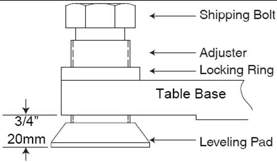
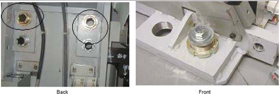
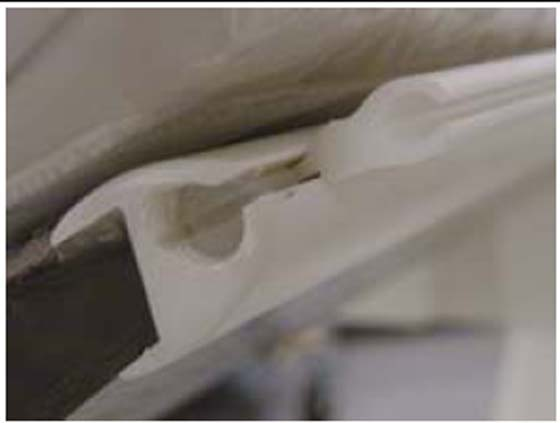

Operating Documentation
Direction 5193574-800, Rev# 22
LightSpeed 7.X Service Methods
Module Version 1.0, Version Date 4/22/10
Operating Documentation |
| Required Persons | Preliminary Reqs | Procedure | Finalization |
|---|---|---|---|
| 2 (FE or mechanical supplier) | Not Applicable | 90 mins | Not Applicable |
| NOTE: | Review the table installation and leveling video for this procedure. |
| Item | Qty | Effectivity | Part# | Manufacturer | |
|---|---|---|---|---|---|
| Standard Install Tool Kit | 1 | - | - | - | |
| 1-½ in., 1- in., ¾ in.sockets | 1 | - | - | - | |
| 1-5/8 in. (40-41 mm) socket | 1 | - | - | - | |
| 10 mm and 14 mm hex socket bits | 1 | - | - | - | |
| ||||
| Potential for Injury. | ||||
| GT 2000 Table on dolly length is 3 m (2997 mm) [118 in. (9 ft.-10 in.)]. | ||||
| Exercise caution when moving the table on the dolly. |
| ||||
| Potential for Injury. | ||||
| Table will tip if not anchored or attached on the dolly. | ||||
| Make certain that Table is adequately secured to the dolly. |
Remove all the transportation packaging and boxes from the table, except the dollies. Leave a layer of packing material on the cradle to protect the cradle from damage. (It can be removed during laser alignment of the table.)
The GT table on dollies is approximately 2997 mm (118 in.) long and may require additional room to maneuver.
Using the table centering and distance locator marks made earlier, wheel the table to its approximate position relative to the gantry.
Locate the table leveling pads inside the table in the back and on the side in the front. Preset leveling pad heights to 20 mm (3/4 in.) (see Illustration 1).
Illustration 1: Table Base Leveling Pads (Starting Positions)

Use a 1-5/8 in. socket and ½ in. ratchet to loosen the shipping bolt. Loosen the locking rings if present.
Use a 1-1/8 in. socket with the adjuster tool, if needed to lower the adjuster.
Use the dollies to evenly lower the table until it rests on the leveling pads using a ½ in. ratchet on each end.
Illustration 2: Adjusters and Lock Rings

Remove the accessory mounting strip attached on each side of the cradle using a small, flat blade screw driver. The nylon screws are inserted inside the accessory rail on the cradle.
Place the accessory strips on the floor and reinstall the nylon screws into the accessory rail for safe keeping.
Illustration 3: Accessory Rail Screw

No finalization steps.